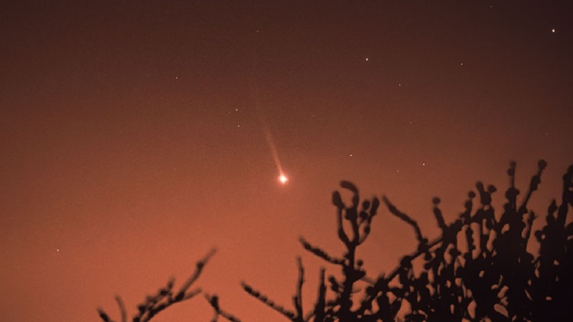
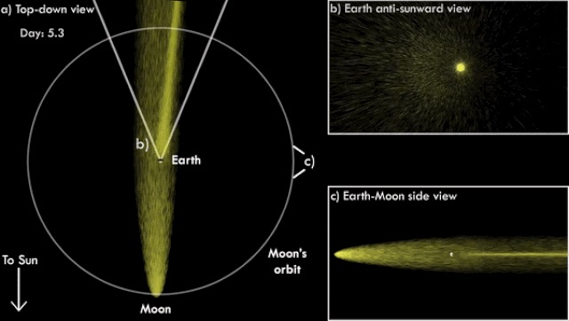

မာကျူရီ ရဲ့ အမြှီးတန်းကို ပြီးခဲ့တဲ့ ရက်ပိုင်းတွေ အတွင်းက တယ်လီစကုပ် နက္ခတ်ကြည့် မှန်ပြောင်းတွေနဲ့ ကြည့်ရှု မြင်တွေ့နိုင် ခဲ့ကြပါတယ်။ အခုလို အမြှီးတန်း ထွက်ပေါ်လာ ချိန်ဟာ မာကျူရီ ဂြိုဟ် နေနဲ့ အနီးဆုံး နေရာကို ရောက်ရှိနေတဲ့ အချိန်လဲ ဖြစ်ပါတယ်။
ဒီလို နေနဲ့ အနီးဆုံး ရောက်ရှိချိန်မှာ ကြယ်တံခွန် တွေလိုပဲ ဗုဒ္ဓဟူး ဂြိုဟ်ကနေ ကြီးမားတဲ့ အမြှီးတန်း ရှည်ကြီး ထွက်ပေါ်လာပါတယ်။ ဒီလို ထွက်ပေါ်လာတဲ့ အမြှီးတန်းကို နက္ခတ် တာရာတွေ ရိုက်ကူးတဲ့ ဓါတ်ပုံ ဆရာ တယောက်က အမိအရ ဖမ်းယူ ရိုက်ကူး လိုက်နိုင်တာ ဖြစ်ပါတယ်။
ဒီလို အမြှီးတန်း မျိုးကို ပုံမှန်မှာတော့ Comet ခေါ် ကြယ်တံခွန် တွေမှာသာ တွေ့မြင်ရလေ့ ရှိပါတယ်။ နေကို ပတ်နေတဲ့ ဂြိုဟ်တွေမှာတော့ ဒီလို အမြှီးတန်း ထွက်ပေါ်လာလေ့ မရှိပါဘူး။
နေနဲ့ နီးချိန် အမြှီးတန်း ထွက်ပေါ်လာလေ့ ရှိတဲ့ ကြယ်တံခွန် တွေဟာ အေးခဲနေတဲ့ ဓါတ်ငွေ့တွေ၊ ဖုန်မှုန့်တွေနဲ့ ကျောက်စိုင်ကျောက်သားတွေ ပေါင်းစုနေတဲ့ အစုအဝေးကြီး ဖြစ်ပါတယ်။ ဒီ ကြယ်တံခွန်တွေ နေနဲ့ နီးလာတဲ့ အခါကျရင် အမြဲတစေပဲ အမြှီးတန်း နှစ်ခု ထွက်ပေါ်လာလေ့ ရှိကြပါတယ်။
ဒီ အမြှီးတန်း နှစ်ခုအနက် တစ်ခုဟာ ကြယ်တံခွန်ရဲ့ အတွင်းကနေ အငွေ့ပျံပြီး ထွက်လာတဲ့ ဓါတ်ငွေ့တွေနဲ့ ဖွဲ့စည်းထာတာ ဖြစ်ပါတယ်။ နောက်အမြှီးတစ်ခုကတော့ ကြယ်တံခွန်ရဲ့ မျက်နှာပြင် ကနေ လွင့်ပျံထွက်လာတဲ့ ဖုန်မှုန့်တွေကြောင့် ထွက်ပေါ် လာရတာ ဖြစ်ပါတယ်။
ဒီလို ကြယ်တံခွန်ကနေ ထွက်ပေါ်လာတဲ့ အမြှီးတန်း နှစ်ခုဟာ နေကနေ အဆက်မပြတ် ပုံမှန် တိုက်ခတ်နေတဲ့ နေလေပြေ (solar wind) ကြောင့် နေနဲ့ ဝေးရာဖက်ဆီကို လွင့်မြောလို့ နေပါတယ်။
မာကျူရီ ဂြိုဟ်ဟာ နေအဖွဲ့အစည်း အတွင်းမှာတော့ အသေးငယ်ဆုံး ဂြိုဟ်ဖြစ်ပါတယ်။ သူဟာ နေနဲ့ အနီးဆုံး ဂြိုဟ်လဲ ဖြစ်ပါတယ်။

မာကျူရီ ရဲ့ မျက်နှာပြင်မှာ အေးခဲနေတဲ့ ဆိုဒီယမ် ဒြပ်စင် အများအပြား ရှိနေပါတယ်။ ဒီ ဆိုဒီယမ် ဒြပ်စင်တွေဟာ ဆိုလာ လေရဲ့ တိုက်ခတ်မှုကြောင့် ဂြိုဟ်နဲ့ ဝေးရာ ဖက်ဆီကို လွင့်စင် ပျံ့ထွက် သွားနေတာ ဖြစ်ပါတယ်။
ဒီလို မာကျူရီမှာ အမြှီးရှိမှန်း သိခဲ့ကြတာ သိပ်တော့ မကြာ သေးပါဘူး။ ၂၀၀၁ ခုနှစ်မှာမှ နက္ခတ် ပညာရှင် တွေဟာ ဗုဒ္ဓဟူးဂြိုဟ် ရဲ့ အမြှီးကို ရှာဖွေ တွေ့ရှိခဲ့ကြတာပါ။
ဒီလို တွေ့ရှိခဲ့ပြီး နောက်မှာတော့ မာကျူရီရဲ့ အမြှီးဟာ နေနဲ့ နီးကပ်လာတဲ့ အချိန်တွေမှာ အရွယ်အစား ကြီးထွားလာပြီး နေနဲ့ ဝေးကွာ သွားချိန်မှာ အရွယ်အစား ပြန်လည် သေးငယ် သွားတယ် ဆိုတာ တွေ့ရှိခဲ့ ကြ၌ရပါတယ်။
နေနဲ့ နီးကပ်လာတဲ့ အချိန် အမြှီး အရွယ်အစားဟာ အလွန်ပဲ ရှည်လျားလာ တတ်ပါတယ်။ အရွယ်အစား အရှည်ဆုံး အချိန်မှာ မာကျူရီရဲ့ အမြှီးဟာ မိုင်အားဖြင့် ၁၄.၉ သန်း (ကီလိုမီတာ ၂၄ သန်း) အကွာအဝေး ထိ ရှည်လျား လာတာကိုလဲ တိုင်းတာ နိုင်ခဲ့ ကြပါတယ်။ ဒီ အရွယ်အစားဟာ ကမ္ဘာနဲ့ လ တို့ရဲ့ အကွာအဝေးထက် ၆၂ ဆ ရှိတဲ့ အကွာအဝေး ဖြစ်ပါတယ်။
ဒီနေရာမှာ ဂြိုဟ်တစ်ခုသာ ဖြစ်တဲ့ မာကျူရီမှာ ဘယ်လိုကြောင့် ဒီလောက် ရှည်လျှားတဲ့ အမြီးတန်း တစ်ခု ဖြစ်ပေါ်နေရတာလဲ ဆိုတာ မေးစရာ ဖြစ်လာပါတယ်။
မာကျူရီရဲ့ လေထုဟာ အလွန်ကို ပါးလွှာပါတယ်။ နောက်ပြီး သူဟာ နေနဲ့လဲ အလွန် နီးကပ်စွာ တည်ရှိ နေပါတယ်။ ဒီတော့ နေက တိုက်ခတ်လာတဲ့ ဆိုလာလေလှိုင်းတွေဟာ ပါးလွှာတဲ့ လေထုကို ဖြတ်သန်းပြီး ဂြိုဟ်ရဲ့ မျက်နှာပြင်ကို အရှိန်အဟုန်နဲ့ တိုက်ခတ် နိုင်စွမ်း ရှိနေပါတယ်။
ဒီလို ဆိုလာလေလှိုင်းတွေ အရှိန်အဟုန်နဲ့ တိုက်ခတ်တဲ့ ဒါဏ်ကြောင့် ဂြိုဟ်က လွင့်ထွက်လာတဲ့ အမှုန်အမွှားတွေနဲ့ ဓါတ်ငွေ့တွေကို ရှည်လျှားတဲ့ အမြှီးတန်း ကြီးအဖြစ် မြင်တွေ့ ကြရတာပဲ ဖြစ်ပါတယ်။
ကမ္ဘာကနေ ကြည့်ရင် ဒီ မြှီးတန်း ကြီးကို မာကျူးရီဂြိုဟ် နေနဲ့ အနီးဆုံး အချိန်ကနေ ၁၆ ရက် တိတိ ကြာတဲ့ အချိန်မှာ အထင်ရှားဆုံး မြင်တွေ့ ကြရပါတယ်။
နေနဲ့ ဂြိုဟ်တစ်စင်း အနီးဆုံး ရောက်ရှိချိန်ကို ပယ်ရီဟီလီယွန် (perihelion) လို့ ခေါ်ပါတယ်။ ဒီ ပယ်ရီ ဟီလီယွန် အချိန်မှာ မာကျူရီဟာ နေနဲ့ အနီးဆုံး ဖြစ်နေတာမို့ သူ့ဆီက အမြှီးတန်း ကလဲ အရှည်ဆုံးနဲ့ အထင်ရှားဆုံး ဖြစ်နေမှာ ဖြစ်ပါတယ်။ ဒါပေမယ့် လက်တွေ့မှာတော့ ပယ်ရီဟီလီယွန် နောက် ၁၆ ရက် အကြာမှပဲ မာကျူရီရဲ့ အမြှီးတန်းကို အထင်ရှားဆုံး မြင်တွေ့ ကြရပါတယ်။ ဒီလို ဘာ့ကြောင့် နောက်ကျပြီးမှ မြင်တွေ့ရလဲ ဆိုတာကိုတော့ ပညာရှင်တွေ အဖြေ ဖော်ထုတ်နိုင်စွမ်း မရှိကြ သေးပါဘူး။
ဒီနှစ်အတွက် မာကျူရီရဲ့ ပယ်ရီဟီလီယွန် ဟာ ဧပြီလ ၁ ရက်နေ့မှာ ကျရောက် ခဲ့ပါတယ်။ ဒီတော့ သူ့ရဲ့ အမြှီးကို ဧပြီ ၁၇ မှာ အထင်ရှားဆုံး မြင်တွေ့ရမှာ ဖြစ်ပါတယ်။ ဒါပေမယ့် ဒီပုံကတော့ ဧပြီ ၁၂ ရက်နေ့က ရိုက်ယူခဲ့တာ ဖြစ်ပါတယ်။
မာကျူရီရဲ့ အမြှီးကို အလွယ်တကူ မြင်ရဖို့ အလွန် ခက်ခဲပါတယ်။ ဒါ့ကြောင့်လဲ သူ့မှာ အမြှီးရှိမှန်း ၂၁ ရာစုရောက်မှ သိကြရတာ ဖြစ်ပါတယ်။ အခုပုံကို ရရှိဖို့ အထူး ပြုလုပ်ထားတဲ့ Filter မှန်ဘီလူး အသုံးပြုပြီး ရိုက်ကူး ခဲ့ရတာ ဖြစ်ပါတယ်။ ဒီမှန်ဘီလူးဟာ အမြှီးတန်းရဲ့ အရောင်ဖြစ်တဲ့ အဝါရောင်ကို အထူး ချဲ့ပေးတဲ့ မှန်ဘီလူး ဖြစ်ပါတယ်။
ဒီပုံကို ရိုက်ကူးခဲ့သူ Sebastian Voltmer က “ဒီ Filter မရှိဘူး ဆိုရင် မာကျူရီ ရဲ့ အမြှီးဟာ သာမန် မျက်စေ့နဲ့ မြင်ရဖို့ မဖြစ်နိုင် ပါဘူး” လို့ ရှင်းပြပါတယ်။
နေအဖွဲ့အစည်း အတွင်းမှာ ကြယ်တံခွန် မဟုတ်ပဲ အမြှီးရှိတာ မာကျူရီ တစ်ခုထဲတော့ မဟုတ်ပါဘူး။ ကျွန်တော်တို့ရဲ့ လမှာလဲ အမြှီး ရှိပါတယ်။ ဒီအမြှီးဟာ အလွန် ပါးလျှာတာမို့ ကမ္ဘာက ကြည့်ရင် မြင်နိုင်စွမ်း မရှိပါဘူး။ ဒါပေမယ့် ကမ္ဘာက လရဲ့ အမြှီးထဲကို တစ်လတစ်ကြိမ် ဖြတ်ချိန်မှာတော့ အလွန် အားကောင်းတဲ့ တယ်လီစကုပ်တွေနဲ့ ကြည့်ရင် ကောင်းကင်မှာ လိမ္မော်ရောင် ဖျော့ဖျော့ တောက်နေတာကို မြင်တွေ့ နိုင်တယ်လို့ ဆိုပါတယ်။
